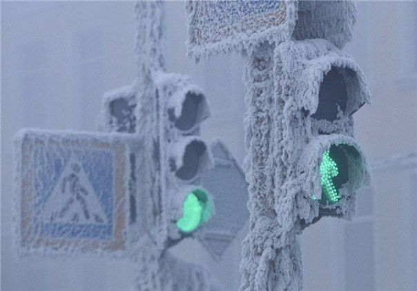

Обоснование выбора
Принцип формирования вопросов
Основная идея при составлении вопросов для данного квиза заключалась в том, чтобы сделать игру познавательной и доступной для широкой аудитории. Я сознательно отказался от заучивания сложных исторических дат и узкоспециализированных административных данных, которые трудно вспомнить без подготовки.
Все вопросы составлены таким образом, чтобы пользователь мог прийти к правильному ответу с помощью логики, эрудиции и общей сообразительности. Темы, связанные со знаменитым зимним туманом, масштабами северных районов или природными ресурсами Якутии, отражают реальные особенности региона и делают игровой процесс интерактивным и вовлекающим.
